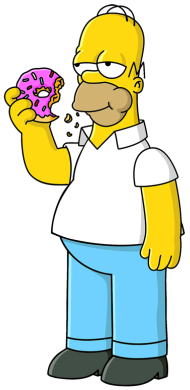
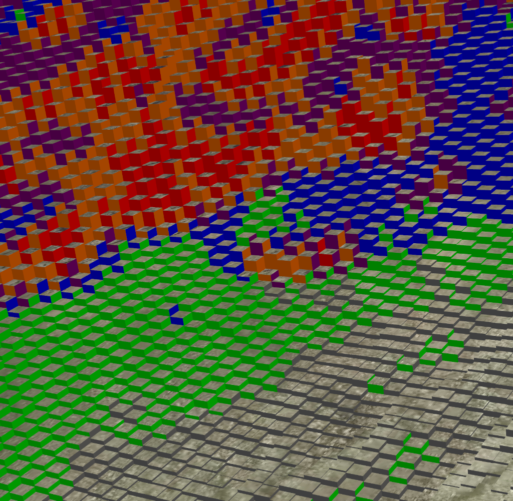
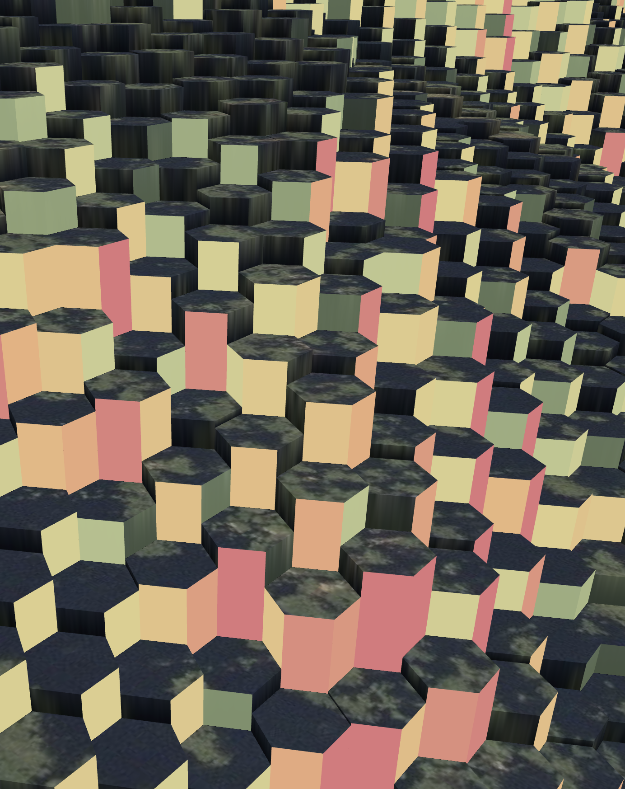
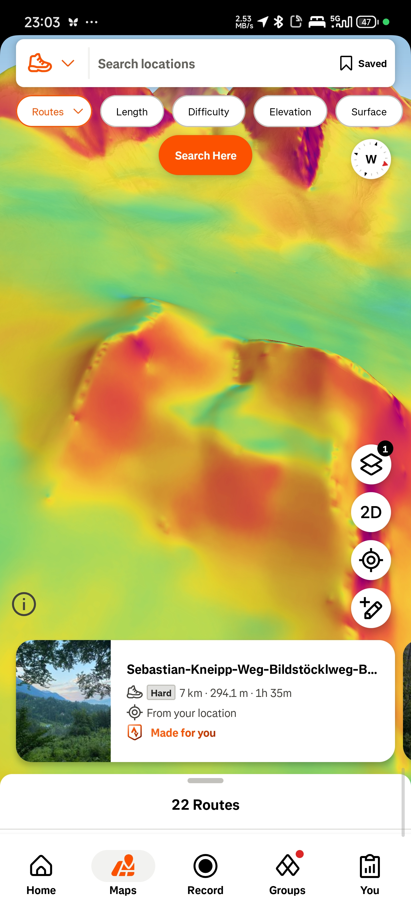
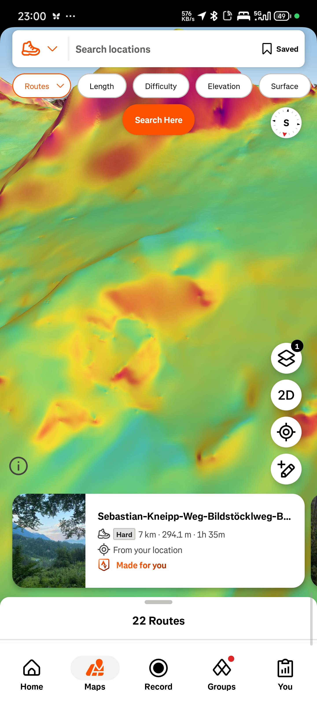
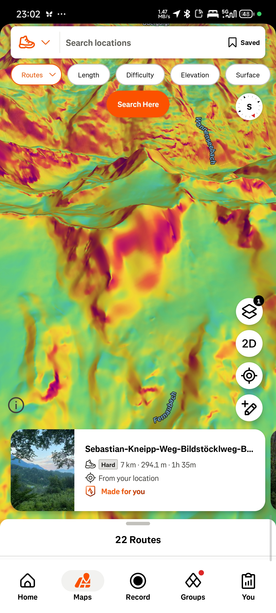

01. The Dither Effect

H. SIMPSONStandard square grids suffer from linear aliasing. They create rigid horizontal and vertical "staircases" that the human eye is exceptionally good at spotting. Hexagons, by contrast, utilize a 30° staggered pattern that serves as a natural reconstruction filter.
Below, we compare how Danny DeVito and Homer Simpson survive the transition to low-resolution hexagonal sampling. Note how the staggered grid maintains visual continuity even when we drop the sample count into the basement.
Toggle between modes to see how hexes "dither" data more organically than squares.
02. Bit Packing
PowFinder moves millions of hexes in real-time. To do this, we don't send heavy JSON or bloated objects. We pack every single hex into a tight 16-byte binary payload. This power-of-two alignment is hardware-friendly and keeps the GPU buses clear.
Every byte has a purpose. We store Vertical Deltas in decimeter precision to handle the dynamic mesh seams, and Baked Normals for smooth, cinematic lighting without the per-frame overhead of normal calculation.
03. Seamless Dynamic Assembly
PowFinder uses a Dynamic Ownership Model to handle real-time terrain stitching. By assigning each hex exactly three "owned" neighbors, the engine can calculate edge alignment on-the-fly. This prevents overlapping geometry and ensures a seamless transition between varying detail levels.


By generating skirts only for SE, S, and SW faces, we ensure that every edge is covered exactly once. This allows us to render the entire landscape in a single draw call (per LOD layer), maximizing throughput on modern GPUs.
04. 3-Axis Diamond Sampling
In a square grid, a pixel centered on a cliff is just an "average" height. This leads to cliff aliasing, where sharp drops look like soft rolling hills.
PowFinder solves this by treating every edge as a unique data channel. By sampling the "Diamond" (the quad formed between two hex centers), we can render a 90° cliff on the South Face while keeping the South-East Face perfectly flat.
Instead of averaging heights, PowFinder creates a unique "Slope Diamond" for every edge pair. This allows the Green interface to have a steep cliff while the Yellow interface stays gentle, despite sharing the same central vertex.
Live visualization of decoupled edge attributes.
05. Real-World Reconstruction
Traditional maps prioritize routes and flat imagery. PowFinder prioritizes terrain geometry using our proprietary Antisintering LOD strategy.
When you stop navigating, the engine triggers a High-Resolution Snap, progressively filling in the foreground with unit-scale hexes (6m resolution). Use the sliders below to compare our cinematic hexagonal reconstruction against the flat legacy satellite maps.






Notice how the hex grid brings shadow, occlusion, and slope variance to terrain that looks "flat" on standard maps.